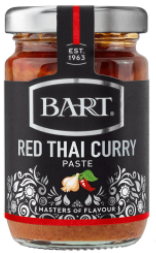

Thai red curry
- Heat for 10 mins until meat is browned
- sunflower oil
- 400g chicken / duck
- 4 tbsp thai red curry paste
- 6 peeled and quartered shallots
- Add 400ml coconut milk and bring to boil
- Add and stir in
- 1 tbsp fish sauce (optional)
- 1 tbsp brown sugar
- Add
- 1 red pepper
- 300g new potatoes cut into quarters
- 100g green beans
- ½ tsp basil (optional)
- Cook for 25 mins until potatoes soft (or 4 hours on high in slow cooker)
- Add fresh chopped basil leaves
Notes
Try quartering potatoes instead of halving
Use 300g chicken if for lunch
Use good coconut milk, not essential kind
Don't need fish sauce as included in the paste
Tried pineapple but not great
Pics
Can buy at Waitrose but not online
